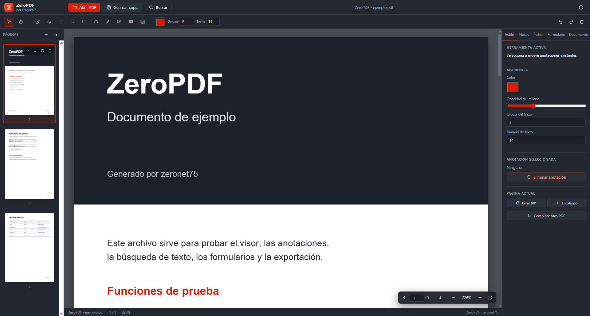

Video
What it does
The essentials of a PDF editor, without subscriptions or limits.
Real text editing
Finds the PDF text operators, removes the original glyphs and redraws with the document's own font, size, colour, bold and italic.
Annotations
Highlights, sticky notes, freehand drawing, shapes, images and hand-drawn signatures.
Offline OCR
Turns scanned pages into editable, searchable text using the Windows OCR engine.
Forms
Fill AcroForm fields and flatten them on export to lock the data in.
Passwords and encryption
Opens protected PDFs with qpdf and saves AES-256 encrypted copies.
Conversion
PDF to Word and Word to PDF (via Word, LibreOffice or the built-in engine), plus image to PDF.
Page management
Rotate, drag thumbnails to reorder, delete, merge PDFs, crop margins and add page numbers.
Print and export
Printing through the Windows dialog, PNG page export and a copy with every change applied.
23 languages
English and Spanish included, plus Arabic with a right-to-left layout.
Languages
The whole interface, menus and messages are translated. English is fully supported.
Before installing
Requirements
Windows 10/11
64-bit. Per-user install, no administrator rights needed.
Optional OCR
Uses the languages installed in Windows. Works offline.
No dependencies
No account, no subscription and no Internet connection required to run.